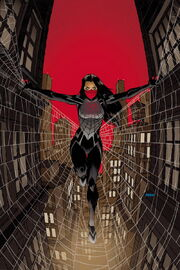

В детстве родители узнали, что у Синди эйдетическая память. Ее мать хотела, чтобы она сосредоточилась на учебе, в то время как Синди предпочла бы продолжать играть в своей школьной хоккейной команде со своим тайным парнем Гектором Сервантесом . Когда ее мать узнала об этом, она была вынуждена пойти на школьную экскурсию в General Techtronics, и Син сказала ей, что она ее ненавидит.
Во время посещения публичной выставки, демонстрирующей безопасное обращение с отходами ядерных лабораторий, паук, облученный ускорителем частиц, использованным в демонстрации, укусил Питера Паркера за руку и упал с его руки, а затем укусил Синди за лодыжку перед смертью.
Первое проявление ее способностей произошло, когда ее неконтролируемая органическая перепонка случайно заставила ее сплести своих родителей. Пришел человек по имени Иезекииль Симс и забрал Синди. Он обучал Синди использовать свои силы, пока не понял, что тотемный хищник Морлан следит за ней. Затем он запер ее в комнате, которая заблокировала обнаружение Морлуна в нижней части его башни, чтобы защитить ее от него. В этом бункере на многие годы хранились продукты, книги и записи о внешнем мире, которые Синди смотрела каждый день. Она знала, что нужно уйти в любой момент, но, зная о последствиях, решила остаться на месте, несмотря на ужасную скуку.
История Синди была открыта Питеру Паркеру тринадцать лет спустя, когда он стал теперь героем, известным как Человек-паук, после того, как Сфера раскрыла миру несколько секретов Наблюдателя.
Ошеломленный этим откровением, он пошел освобождать Синди. Она пыталась предупредить его о Морлуне, но он все равно открыл дверь, и она напала на него за то, что он обрекал их на охоту Морлуна. Питер рассказал, что Морлан мертв, и, поняв, что она свободна, Силк смастерил импровизированный костюм из паутины и сказал Человеку-пауку называть ее Шелк, прежде чем отправиться в дом ее родителей.
Поняв, что ее родители переехали, Человек-паук пообещал помочь ей найти их. Она спросила его, когда умер Морлан, но после того, как он сказал ей, что умер дважды, она поняла, что он уже однажды воскрес из мертвых, и напала на него, сказав, что он может вернуться снова.
Морлан, который действительно вернулся, почувствовал ее освобождение и начал свою величайшую охоту.
Синди напала на него за то, что он растратил ее жертву, вытащив его с помощью паутины и спросив, может ли он почувствовать, что все они в опасности. Питер понял, что его паучье чутье было перегружено, как никогда раньше. Силк поднял маску, и они поцеловались.
Почти сразу у них завязались очень близкие отношения, удивив Анну в квартире, которую она делила с Питером. Она почувствовала угрозу от присутствия Анны и заставила ее отступить от Питера, хотя позже она извинилась.
Она помогла Человеку-пауку против Электро и Чёрной Кошки, когда они напали на телеканал, на котором Питер давал интервью для продвижения своей новой гуманной сверхчеловеческой тюрьмы.
Шелк спасла Человека-паука от разоблачения Чёрной Кошкой в прямом эфире и сбежала с ним из студии. Позже Синди сопровождала Питера на демонстрацию технологии отключения Электро, которая проходила в Уотерфронте, саботированном Чёрной Кошкой. В своих костюмах Питер и Синди сражались со злодеями.
Шелк спасла невиновных от сбившейся с толку машины, а позже защитила Человека-паука и Электро от взрыва, который, к счастью, лишил злодея силы. Затем Синди присоединилась к Fact Channel, чтобы такой огромный информационный центр помог ей найти пропавшую семью.
После битвы с Наследниками она переориентировалась на поиск своих родителей с помощью ресурсов Fact Channel News, начав карьеру борца с преступностью, начав с борьбы с новым злодеем по имени Коготь Дракона . Вскоре она обнаружила, что записи о ее родителях были стерты, но это не выключило ее, и она продолжала собирать ключи к их местонахождению, даже возвращаясь в свой старый бункер, где она создала доску доказательств. Шелк не знал, что все это время две загадочные фигуры наблюдали за ней каждый раз, когда она находилась в бункере.
В своих исследованиях она боролась с черепоподобным роботом, созданным Гидрой, и уничтожила его. В процессе она также столкнулась со своим школьным парнем, который теперь был помолвлен.
Позже у нее была еще одна стычка с Черной Кошкой, которая победила ее в бою. Она также помогла Когтю Дракона вернуть свою дочь с помощью Человека-паука. Тем не менее, Черная кошка снова победила ее в бою, и она была похищена ремонтником , который показал, что работал на людей, у которых была ее семья.
Она попыталась получить от него информацию, но прибыла Черная кошка и жестоко избила его, прежде чем он был убит в результате обрушения здания. Силк был рассержен этим и напал на Кошку, в результате чего она предложила Синди шанс присоединиться к ее организации. Силк отказалась и сначала одержала верх над Черной Кошкой, но тем не менее ей удалось сбежать.
Во время последнего вторжения Синди получила информацию от Джона Джеймсона о человеке по имени Джеймс Парк, который был связан с Нацией гоблинов и предположительно был давно потерянным братом Синди Альбертом Мун.
Она отправилась на его поиски, но из-за вторжения ей пришлось спасать людей от гибели и ранений. Она поспешила в больницу и обнаружила своего брата в комнате 407 и со слезами на глазах обняла его, когда Земля-616 и Земля-1610 столкнулись, убив их и всех остальных в обеих вселенных.
Когда вселенная вернулась к жизни, то же самое произошло с Шелком и всеми ее обитателями, без каких-либо воспоминаний об их временной кончине.
В течение восьми месяцев Синди наладила свою жизнь, и она даже получила повышение, но ее родители все еще отсутствовали, а ее брат не помнил, что с ними произошло. Она также начала работать на Black Cat как суперзлодей, но выяснилось, что это прикрытие, поскольку она работала с ЩИТ, чтобы найти своих родителей.
Во время приключения с другой Женщиной-пауком Синди узнала, что ее двойник с Земли-65 (вселенная Паука-Гвен) был причиной сил Гвен, и она отправилась на Первую Землю, чтобы украсть и перепроектировать технологии величайших умов. Вселенной для разжигания войны.
После противостояния Синди-65 с Пауком-Гвен, Гвен потеряла свои силы из-за наноботов Синди-65 и имя Синди-Прайм, поскольку Шелк была запятнана как злодей, настолько, что ее обработчица ЩИТа Пересмешница подумала, что она действительно совершила преступления, в которых ее обвиняли.
После того, как Черная Кошка освободила Шелка из конвоя пленников ЩИТа, Синди решила остаться с Черной Кошкой, а позже вернулась, чтобы помочь Гвен и Джессике выиграть битву с боссом с Синди-65, которая использовала перчатку, которая воспроизводит способности вселенных самых грозных сверхлюдей.
Синди, в результате клеветы на своего коллегу с Земли-65, заслужила большее доверие Черной Кошки, чтобы получить более глубокую информацию о ее преступной операции, все еще намереваясь завершить свою миссию и получить все, что ЩИТ имел о местонахождении ее семьи.
В конце концов она спасла своих родителей, которые находились в Негативной зоне в поисках лекарства от ее способностей, а позже она присоединилась к своему боссу в поездке в Сан-Франциско, где она создала новый псевдоним, чтобы исследовать таинственный Новый U, также надевая новый костюм, вдохновленный традиционными корейскими платьями.
Однако ее личность тутового шелкопряда продержалась только на миссии, поскольку она вернулась к своему старому кодовому имени, когда вернулась в Нью-Йорк.
На следующий день после миссии она решила покинуть канал фактов, потому что больше не хотела быть журналисткой, и приняла приглашение Пересмешницы поступить в Академию ЩИТа .
После того, как Норман Осборн связался с симбиотом Карнажа, став Красным Гоблином , он тяжело ранил Питера, заставив Питера связаться с Синди и приказав ей присматривать за его близкими.
После того, как Красный Гоблин ранил Человека-Факела и Клэша, она вместе с Майлзом попытались сразиться с ним, однако Красный Гоблин быстро с ними справился и нанес им серьезный урон.
Затем Флэш Томпсон в роли Анти-Венома прибыл, чтобы сразиться с Норманом, но был вынужден удержать павших героев от смерти, в то время как Красный Гоблин ранил Флэша. После того, как Флэш отвез их в больницу, он использовал своего симбиота, чтобы удалить части симбиота, оставшиеся в их телах, у Нормана, который намеревался использовать их, чтобы убить близких Питера.
Когда Шёлк обедала с Защитниками после того, как Джимми Ву предложил членство своему агенту Атласа, Война миров поразила Землю, и затем она присоединилась к Брауну, чтобы помочь в Сеуле, Южная Корея.
После того, как силы Синдры были подавлены и взяли Корею, Синди под прикрытием стала местной кореянкой и нашла способ замаскировать Амадея Чо под солдата Муспельхейма, чтобы освободить пленную Луну Сноу.
Когда Браун сражался с Синдрой, Аэро, Вэйв и Луна использовали Black Bifrost, чтобы понизить температуру, а затем были доставлены в Северный Китай, где Шан-Чи начал тренировать их для боя.
Когда Синдр прибыла в Северный Китай вместе с захваченным Брауном, Шелк подкралась к дракону Синдры и освободил Брауна, который заставил Синдр приземлиться, позволив остальной части команды устроить ей засаду. После жертвы Пеле и Короля обезьян Синдр попыталась сбежать, но команда и капитан Марвел смогли победить ее у Великой Китайской стены.
После этого они начали захватывать и сопровождать оставшихся огненных гоблинов в Шанхае.
Когда компания Big Nguyen начала объединять разные азиатские города в город Пан с порталами, агенты защищали Майка Нгуена от виверн.
После этого он предложил агентам стать новыми защитниками Пана вместе с Защитником, но они отказались. После спасения нескольких мадрипурских беженцев от Морских Змей, Защитник пришел к ним и предложил поработать вместе над поиском секрета Майка.
Среди своих дел Синди поделилась видением Питера Паркера, умирающего от обезображенного и перевязанного демона.
Когда Джулия Карпентер предупредила, что неизвестная сила привела Человека-паука к конфликту с Пожирателем грехов, Синди стала одним из основателей Ордена Паутины, стремясь спасти Человека-Паука от Нормана после временного ослабления действия Пожирателя грехов. Затем Синди стала свидетельницей антагонизма Нормана и Питера из-за Гвен, и увидела, как Питер бросил Нормана ради Пожирателя грехов, когда они сбежали. Поскольку жертва Человека-Паука Нормана была сделкой, заключенной с Сородичем, чтобы избавиться от злодея, Синди была захвачена демоном, посланным Сородичем, чтобы уничтожить Питера.
Под контролем Сородичей Синди и остальные члены Ордена начали сеять хаос в городе и даже сражаться с Новыми Воинами. Достигнув Бруклинского моста, они напали на невинных прохожих, а также напали на самих себя, вызывая разрушения вокруг, вынуждая Питера заключить сделку с демоном, чтобы освободить своих друзей.
Освободившись от контроля Сородичей, Доктор Стрэндж помог Ордену найти демона и добраться до его кладбища. Там они сразились с Пожирателем грехов, который был усилен силами Морлуна. Однако после их победы Сородичи схватили их и заставили стать «гостями на обеде» для своей группы. Неподвижная и уязвимая жизнь Синди, как и всех остальных, была спасена своевременной петицией Мэри Джейн Уотсон о самопожертвовании и прибытием Нормана Осборна. Их успешная ловушка Сородичей позволила им сбежать, завершив испытание возвращением домой, чтобы восстановить силы.
Поскольку больше не нужно было справляться с мировыми угрозами, Синди, наконец, получила собственную квартиру с братом, когда он учился в колледже.
Синди снова сосредоточилась на своей журналистской карьере и снова начала работать на Джона в качестве репортера в Threats and Menaces . После публикации ее первой истории по ошибке, Иона подвергся нападению по дороге домой и велел бросить ее, что привело к вмешательству Шёлк. Согласившись стать телохранителем Ионы, они продолжили расследование дела и его связи с глобальной технологической компанией Fujinet.
После того, как она помешала кошке-демону убить другую банду, играя за Шелка, она заметила на существе еще один наушник дизайна Фуджине. Не сумев заставить оставшиеся банды заключить перемирие, она доверяет все, что может, своему новому терапевту после того, как ее обычный терапевт ушел из-за чрезвычайной ситуации в семье. Найдя и взяв интервью у Сая Исии, магнат / влиятельный человек раскрыл, что знает о Шелковой личности Синди, прежде чем Синди ушла. Получив письмо от нового контакта, Синди с удивлением встретила Сильвермейн, подтвердивший себя отцом Сая.
Проведя около 10 лет в изоляции, Синди страдает пограничным социальным тревожным расстройством, из-за чего ей трудно находиться в некоторых социальных условиях. Однако, не желая больше оставаться одна, Синди заставляет себя заводить новых друзей, например, когда она была на канале Фактов под руководством Джона Джона Джеймсона. Ее героический характер - часть ее внутреннего стремления помогать людям и познания чувства одиночества.
Физиология паука: Шелк обладает пропорциональными способностями паука, данными ей облученным пауком, который укусил Синди Мун, которая, по-видимому, уже мутировала из-за предыдущего воздействия определенных частот радиации и получила последнюю смертельную дозу во время посещения выставки. Радиоактивные сложные мутагенные ферменты в крови паука, которые были перенесены во время укуса, вызвали многочисленные мутагенные изменения во всем теле Мун, наделяя ее сверхчеловеческой силой, скоростью, жесткой плотью и многочисленными способностями, подобными паукообразным. В отличие от Человека-паука, у нее меньше сверхчеловеческой силы, чем у него, но она также обладает большей ловкостью, чем он, и развитым паучьим чутьем, гораздо более чувствительным, чем другие тотемы. Она обладает способностью производить органические лямки из кончиков пальцев. Ее способности включают:
Одаренный интеллект
Эйдетическая память
Катание на коньках
Шёлк может поднимать около 8 тонн.
Кажется, ее шелковое чутье вышло из строя. Однажды ночью ее предупредили, когда друзья оставили девушку после вечеринки и она плакала. Ее чувство также постоянно срабатывает, когда, казалось, не было непосредственной опасности, что делает его очень чувствительным до такой степени, что она игнорирует его, даже когда находится в прямой опасности.
Наверх